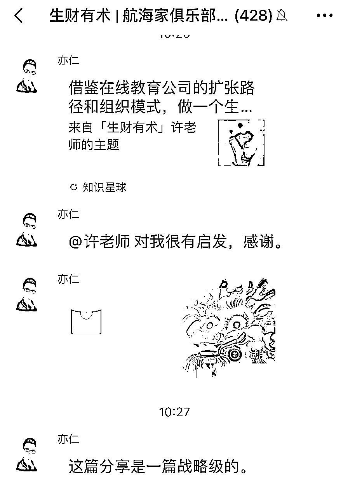

来源：https://wi1v74w740.feishu.cn/docx/C9u1dBlXzoK4j6xRtmfceGrXnqd
哈喽各位圈友好，我是深耕在线教育7年的许老师，在发表了《借鉴在线教育公司的扩张路径和组织模式，做一个生财商学院，会是个10X战略吗？》文章后，不仅得到了精华认证，还得到了亦仁老师的高度评价（够我吹牛好久），同时也给我带来了一些咨询单子。

在和这些圈友咨询的过程中，我发现，有一些圈友是守着金矿不自知，手里的项目已经跑通了 0-1，达到月入10万+ 的水平，产品口碑不错，商业模型从算账角度来看也好得不得了，但是创始人自己却每天被一堆事情牵扯住，没有意识到要尽快放大，或者不知道放大的路径具体要做什么事，然后就一直停留在月入几十万的小作坊的水平。
之前风投有句老话，风口来了，猪都能飞起来，我们俗语说，没吃过猪肉，还没见过猪跑吗？聊完后，我就觉得，之所以有好项目的圈友守着金矿不自知，是因为他没有见过猪是怎么跑起来的，而我，恰巧见过两回，跟着两个创业项目从 0 做到过亿体量。
今天这篇文章就从我创业团队早期员工的视角，以讲故事的形式，给大家描述下核桃编程是怎么起飞的，主要讲讲月营收50万到1000万的过程，希望对类似体量的创始人们有些启发。
正文开始前，大家可以猜一下，核桃编程从月营收50万，到1000万，体量放大了20倍，花了多长时间？下文中给大家揭晓。
彼时是2018年初，少儿编程行业方兴未艾，还处在比较早期的教育市场阶段，行业里有一家相同模式（录播课）的领先者，西瓜创客，已经跑了1年左右，产品0-1得到验证，有不错的营收，也拿了经纬、红杉等知名机构的融资。核桃编程晚半年成立，开始时一定程度上“借鉴”了西瓜创客，包括上课模式、微信群运营等。产品0-1已经完成了验证，月营收达到10万+，但在体量上、产品成熟度上都处在相对落后的状态。
看到这里，有经验的圈友们应该会心一笑了。“有对标产品”、“蓝海市场、处于增长期”、“先借鉴再创新”，很典型的打法。
2018 年 3 月，我正式加入核桃，18 号员工，负责教研，当时公司有三四个销售，2 个市场，几个课程相关的人，四五个技术，1个hr兼行政，人少资源少，窝在一个孵化器里面。不过麻雀虽小五脏俱全，每个该有的岗位还都有至少 1 个人。2个创始人，一个负责前端获客和销转，一个负责后端产品和教研。这种状态，应该和我们很多圈友的公司差不多，典型的小作坊。创始人带队攻坚，其他人都是创始人的助手。规模不大，没有管理，也不需要复杂的跨部门对接，执行力100%，老板喊一声，指令就执行了。
前面花了点篇幅，描述了下核桃编程起步时的背景和现状，是想说明，创业早期大家都是小作坊，看着大差不差，是后面的一些选择，决定了这个小作坊能转变成正规军作战，还是一直小富即安，无法长大。
下面正文开始。一个老板怎么设定目标，一定程度上决定了公司的发展速度。
2018年3月，核桃月营收50万，我参加了入职后第一次全员会，会上老板说，我们5月份月营收要达到300万，如果达成营收目标，在场的人分掉100万奖金。台下的我，心里犯嘀咕，这种目标，是不是饼画大了，不过奖金确实相当诱人。
事实证明，是我错了。2个月之后，我们营收如期达到 300 万。我分到了100万奖池的不少钱。
然后在庆功会上，老板又定了个目标，等到今年10月份，我们要做到月营收 1000万。如果达成，分掉500万奖金。
你猜结果是什么？
对，我们继续完成了目标，然后快乐分钱。
所以，答案是，核桃编程从月营收50万，到1000万，放大了20倍，总共花了不到 7个月时间。很不可思议的速度。
当然这种速度有一定资本助推的因素，当时拿了一些投资，所以才有钱能在前端快速投放，现在已经不是当年这种高歌猛进，资本狂欢的叙事故事了。不过创始人的疯狂扩张的野心和节奏，还是让人不由得佩服。忽略资本叙事，对我们至少有一个启发，不要根据手头有限的资源去设定目标，否则目标容易过于保守，而是要大胆定目标，再去想办法组织资源达成。
通常我们定目标都是，在现有的基础上，增加20%，或者激进点，增长 50%，这种思路比较适合于成熟市场，变量很少，每年靠优化现有流程、更加努力工作取得增长。而在新兴市场，或者蓝海项目，如果还是这种思路，就很容易设置一个过低的目标，浪费宝贵的市场红利期。这种情况更适合于，以终为始，从战略推出目标，然后根据目标去组织资源，驱动团队一起完成看上去不可能达成的目标，取得10倍增长。
核桃编程在成立初期，创始人就定下了最后要做到行业第一的宏伟目标，按照行业终局和战略目标倒推，是可以大概推导出每一年需要做到什么规模的。假设3年后，少儿编程格局稳定，整个市场体量如果达到100亿，按照编程的集中度来看，行业第一名市占率10%，需要达到10亿体量，那么2年后，至少得到3-5个亿（最后一年增长100-200%），然后再往前，到第一年的时候就得达到过亿体量，不然是根本完不成这个目标的。这只是一个相对模糊的测算，但大概指明了方向。根据这个测算，大家就比较容易理解，在跑通后只是50万月营收的情况下，创始人就定下了几个月后1000万月营收的目标。从50万看1000万，会觉得这个目标非常激进，就像画饼，根本不敢定出这样的目标。从3年后10亿 - 2年后3~5亿 - 1年后1亿体量 - 每个月月营收先达到1000万 - 300万月营收 的路径拆解来看，就觉得目标合理。
我们实际看一下核桃编程那会的现状，刚刚跑通了0-1，前端卖 49元的体验营，然后转到 1999 元的长期课，转化率高达 40%。而且一个体验营投放的线索几百块钱，有经验的圈友应该能算出来，这个模型非常好。录播课交付，毛利率是很高的，80%以上。一个投放线索假设是 300 元，那获客成本是 300/40%=750 元。那会一个体验营每期 300 人，成交 120 单，一单下来销售成本就 100 元左右。所以每一单的成交都是有很高利润的，这还不考虑续费的情况下。在这个模型下，最应该做的事情确实是，投放拉满，快速扩量，同时一边扩量，一边扩张销售团队，并且辅以各种销转策略，稳定转化率。
当然了，在定完这个高目标后，碰到的具体的困难非常多。比如，要完成目标，流量就得扩好几倍，那我们需要招聘好几倍的BD人员，但在新BD入职前，老的BD要承受之前大得多的业绩压力；流量已经进来了，销售的招聘速度跟不上，部分销售的转化率出现一定程度的下降，销售团队每天都在打仗，销售leader每天都在救火；为了解决销售在某个时间点快速上人的规模化招聘问题，就得人力行政体系也像业务团队一样，能快速响应，拿出方案，按时按点完成招聘目标；一名销售入职后，很难有时间说参加完培训后再出业绩，而是承接流量的手机已经等着了，新人拿着一版简陋的sop，开始就转化出单。刚进来带过2期的销售，马上就得变成另一个人的师傅。销售团队是在这个过程中，组织力最受到考验的。同时，好几倍的用户流量进来了，产研就得技术扩容，确保上课不出故障；教研得加班加点，响应更多用户提出来的各种合理需求，辅助销售团队做好产品培训工作等等。
总之，在这个高目标下，组织的每个环节都承受了巨大的拉扯力，哪一个环节掉链子，都会导致目标达不成。但也就是在这个达标的过程中，锤炼了组织能力。可以说，没有这样的高压测试，组织的能力也提升不了这么快。
各位手上握着金矿项目的创始人们，一定要敢想敢干，敢于制定看上去不可能达成的目标，先提出一个里程碑的目标，然后根据这个目标定策略，尽全力获取实现目标所需的资源。而不是受限于现在手上只有几条枪，看着自己的草台班子，然后定出一个踮踮脚就能够得到的目标。那样的话，就浪费了这个宝贵的红利期。
我聊的几个圈友的产品，真可以说是蓝海产品。高客单（5000-1w），低交付成本，短交付周期，当前在流量侧，大多数是自然流的免费流量，靠私聊转化，转化率能做到 5-10%，仔细算一下，毛利高达 80%以上，去掉几百块一单的销售成本、很便宜的流量成本后，净利率还能在70%以上，真的是非常适合放大的模型。不过创始人当前的工作重心却被很多杂事占据，没办法腾出手来专心搞流量，守着一个金矿不自知。想要破除这种困境，就必须设定一个高目标，然后引入必要的资源，比如更合理的团队分工（流量、销售、交付各有人独当一面），更强的销转体系，解放创始人，然后让创始人去疯狂获取还在红利期的流量。要知道，这个流量红利期，可能1年后，甚至几个月后，就消失殆尽了。到时候流量成本贵几倍，转化率更低，规模化扩张的难度会难10倍以上。
定下了几倍增长的目标，比如流量扩几倍，销售业绩翻几倍，是不是意味着，要做几倍的事情呢？复杂度也变成几倍呢？
这个问题是来自于一个圈友真实的困惑，“为了做更多增长，我现在要不要去找同行买量，要不要尝试从其他渠道获取流量？比如社群营销裂变，学员转介绍、然后销转侧，要不要去做体验营，去想办法活跃学员交流社群？”
我的回答是，通通不要，就只从你现在擅长的点，从抖音获取流量，然后私域私聊成交，当前先把这个点打透，都能放大三五倍。
核桃编程在早期的时候，做的事情非常聚焦，就是不断地在 流量 - 销转侧的增长飞轮上发力，凡是和放大流量、提高转化率不相关的事情，一般都选择不做。在流量渠道上，也非常聚焦，就是做公众号的广告投放，找各种不同的号去投，从公众号来的流量基本占了90%以上的流量。核桃在一开始试着投了一篇科技相关的公众号，把投放流程跑通了，从公众号获取流量，直接导入老师微信，然后建体验营，服务，转化，链条ok，转化数据也很好，紧接着就开始扩充团队，招聘BD，全网搜罗，聊各种不同的号，然后谈排期，发软文，带流量。从一开始投和编程、教育相关的很垂直精准的号，到投能覆盖到家长群体的号，再到泛一点能触达到成年女性的号。基本上把所有的公众号都洗了一遍，一个有效动作持续做，做到无效为止。到后期，才逐步开始多渠道布局，搞tmk渠道，投抖音等等。
这样做的好处是什么？首先，那会公众号平台的流量红利是很多的，核桃一开始只是投了可投号的几十个号，而上限是几十万，流量的天花板很高，每个月核桃只需要吃掉几万个流量，就足够业务放大了，所以公号这个单一渠道就足够核桃吃好一阵。其次，团队的手感会越来越熟练，能沉淀出一些方法论和经验。什么样的号目标群体是匹配的，什么样的软文是符合目标号主的调性的，什么样的文章转化率高，类似这些投放的细节问题，都能在每次的投放中得到更多认知，然后团队的投放成功率就更高，文章转化率就更高。
如果是贪多求全，每个渠道放一两个人，然后每个渠道 也做不深做不透，那不仅会浪费大量的组织精力，导致资源耗散，而且还会错失公众号的流量红利。这就是老话说的，伤其十指不如断其一指。与其在每个渠道都是零敲碎打，不如一个渠道吃透。现在每个流量平台，不管是抖音、视频号、还是小红书、甚至是B站，流量的天花板应该都是很高的，所以与其做几个不同渠道，不如在一个渠道上把流量放大5倍，10倍。
回到这个圈友的案例，他的流量渠道是从抖音上直播引流到私域，每次直播都能引流个100多个微信，然后转化率能做到 5%，成交 5单，GMV 2万5，非常亮眼的数据，而他花在抖音上的精力还不到 20%，直播也是有一搭没一搭的。我说，你赶紧抓住这波流量红利，你就想象每一场抖音直播，都有人给你发 2万5的报酬，带着这样的回报预期去直播。
把其他环节尽快捋顺，把杂事排开，自己做对放大业务杠杆最大的事情，也就是把至少60%的精力都放在抖音上，多研究爆款视频，多发视频，多做直播，然后开始研究抖音投放，之前都是自然流，现在就想办法投放买量，把场观从100人，拉到500人，然后每场引流500个微信，如果能在流量端放大5倍，即使你转化率掉一些，也能实现三四倍的营收增长。
销转侧也是一样，模式越简单越好，尽量不要多种模式并行，虽然我上篇文章重点写了要怎么打造一个转化率高的体验营，但他当前的阶段，我觉得不用动用体验营这么重的模式。
他的私聊转化率现在是5%，我认为这个水平已经是80分了，可以继续用同一个模式打，等到转化率掉到 3%或者更低的时候，再考虑用体验营这种重模式去提高转化率。他是一个号一个月可以接待1500人的新增流量，然后转化 5%，一个月产出75单，30多万的GMV，已经是非常好的产出水平了。正常教育公司的销售，一个月单产20万，已经是比较优秀的水平。
在精力有限的情况下，他应该专注于抖音流量的放大，比如一个月可以有3000个新增流量，然后多招一名销售，把这个销售培训到5%转化率，这样就放大2倍了。然后继续搞更多的抖音流量，招更多的销售，把抖音流量放大到5倍，销售队伍变成5人，开始有标准的销售的话术，培训，等到更多的流量进来，发现私聊的话术再打磨，都达不到5%，掉到3%，那么一个人产出变成 45单，20几万的时候，再考虑上更重的体验营。其实在我看来，如果都是自然流，3%的转化率仍然是很不错的。可以继续放大流量，即使转化率只有2%，做到一个月 2万个新增流量，然后10个人的销售队伍，每个人单产也有 1500*2%*5000= 15万，那会再考虑启用体验营来转化，都是来得及的。当然更好的方式一定是，增强组织力量，尽快招一个能力强一点的销售负责人，可以把这块拎起来，然后创始人专注在抖音流量获取，销售负责人为转化负责，稳定现有模式的转化率，然后尽快开展体验营的MVP测试。
早期创业团队资源非常有限，尤其在初期，高度聚焦在几个有效动作上，找到一个有效渠道单点打透，用一套有效的销转模式持续做深，要尽量去打容易的仗，而不是到处做新东西新渠道，不断地在摸索，试错。现在回想起来，核桃编程虽然早期落后，资源比竞品更少，但是由于做的事情更集中，反而在很多局部的战场上，资源比竞品投入多好几倍，吃到了更多的红利，很快就赶超上来了。
前面一直在讲，抓住红利期尽快放大，那如果产品本身还比较粗糙的话，是先优化产品，还是先放大流量啊？如果在产品没那么完善的情况下，就使劲投放，会不会沦为割韭菜，然后口碑下滑，业务崩盘呢？
非常典型的问题，早期资源肯定做不到产品和流量一起抓，只能选其一先突破。事情是都要做，但是做事节奏很重要。
我们来看看核桃的选择。
创业初期，核桃的产品还非常的粗糙，孩子直接在一个网页上上课，每次课程，孩子看一段 10 来分钟的讲解视频，然后做一个练习，再看一段 10 来分钟的视频，做一个练习。每节课这两个练习做完后提交，然后有助教老师批改，写一段作业评语。没有客户端，不支持平板上课，没有教学练评测的教学闭环，只有一个上课-交作业的主体体验，相比竞品，核桃的整体产品体验是最薄弱的，这种体验只能说是一个60分的产品。
而且更神奇的是，核桃卖的是期货课程，当时课程还没做好，甚至可以说才刚开始做。常常是学生这周五7点要上课了，我们 6 点才刚刚把课做好，然后上传到网页上。我加入的时候，只有一个sku产品，但那个sku偏向小学高年级，难度大，无法适配低年级学生，为了抢占低年级市场，同时提升低年级的转化率，我直接开了一条低年级产品线，独立招生获客，初期我一个人写稿、做课，每周出一节课，出完体验课3节课后，市场就开始招体验营获客，销售拿着一个课程大纲开始卖系统课，然后系统课边卖边做，每周一节课慢慢产出。
整个教研就是这么简陋的状态在运行。
如果是我，这么粗糙的产品，我拿到投资款后，可能第一时间是去优化我们的产品体验，然后加快教研人才的招聘，把做课速度提上来，完善教学练评测的各个环节。但创始人做了完全不一样的选择。
在18年3月到10月期间，我们的工作重心全部放在了 投放 - 销转的扩张飞轮上，这期间市场团队和销转团队都扩张了好几倍，创始人的工作优先级大部分在业务放大上，产品只是按部就班的往前做，体验提升不大。直到 18年10月份，我们的月营收达到了 1000万，创始人开始着手准备产品升级。
这款新产品和之前的不同之处在于，不是之前产品的小迭代，而是彻底升级，投入的资源是之前的几十倍。之前的模式是，纯录播课，这种模式门槛很低，竞品容易模仿，且对孩子要求很高，要求孩子能够仔细看完10分钟相对枯燥的视频，只适配于早期思维培养较好，对编程兴趣度高的孩子，对于后期中等水平、编程兴趣一般的孩子，这种模式挑战很大，孩子学不明白也学不下去。
而新产品，一节课会有一段完整的6-8分钟的动画剧情，品质对标动画公司，在剧情发展中，设定冲突点，让主人公开始去挑战任务。每一节课不再是纯视频，而是由做了细致的环节切割，孩子看完一段1-2分钟的讲解视频，然后去闯关，用编程把这个关卡通过，然后再看一段知识点视频，然后去做练习，一节课重复 9-12次这个过程。相比之前录播视频对于孩子注意力的极高要求，这种模式，游戏化体验，孩子兴趣度更高，同时看完知识就及时练习，练习频率也更高，颗粒度更细，对于孩子教学效果是更好的。一节课的研发从动画，到教研成本，加起来投入在20万左右。一年系统课 56节课，总投入超过1000万。新产品从10月份开始研发，12月体验课出来后开始跑MVP转化测试，转化率和之前差不多，然后19年1月份开始全面推广，之后核桃开始一骑绝尘，用比竞品更好的体验，获得了更多的客户，开始朝着行业第一稳步前进。
为什么在月营收达到1000万之后才升级产品呢？因为这种研发投入，只有学员体量大到一定程度才能支持。如果买过这个产品的学员有10万名，则每个学员摊下来的成本是，100元，这个交付成本就可以忽略不计了。如果只有1万名学员学过，每个学员的成本就高达1000元，最终 1000/1999 = 50%，光教研摊薄下来的成本就占了50%，整个模型就走不通了。而月营收1000万，每个月新增5000学员，一年新增6万学员，这个体量开始能支撑这样的教研投入。
回过头来我们看一下核桃的做事节奏。市场早期，编程的产品较少，核桃用一款粗糙的产品验证了市场需求，把模型跑通了，此时没有急着优化产品，而是聚焦于业务放大，快速做到了1000万月营收，然后并没有停留在门槛很低的产品上，而是在研发上重投入，研发了体验更好的、领先市场的产品，用好产品接着获取了市场中期的更多客户。后来的竞争者如果想进入这个市场，就必须投入至少1000万，才能拿出同等的产品体验，大多数创业者被阻挡在外，只有教育大厂才能进入这个赛道来分一杯羹。
所以如果你当前的产品，能够满足市场需求，有不错的转化率，能够产生营收，学员的口碑没有出现大面积差评（个别差评可以理解），那就是一个60分的产品，如果口碑还不错，那至少是一个 80分产品，不管你的产品你觉得多简陋，那至少是得到市场认可的。这个时候，就应该把重点放在规模放大上。因为，有了销售额，才有更多的钱来优化产品。而不是优化完产品，销售额自己就会上来。收入越高，产品研发可投入的资源越多，产品优化得越好，反过来促进前端的获客和转化效率越高，销售额又会更高，另一个飞轮就形成了。
而不是反过来，在营收不高的情况下，把精力、金钱都一直投入在产品优化上，追求完美主义，看不得一个两个差评，指望靠着口碑和转介绍，形成学员裂变，促进规模的提升。事实上，这个链条是完全行不通的。即使你产品做得再好，要靠口碑转介绍放大规模，也是极不靠谱的。
和核桃同期的另一个竞品犯过这样的错误，公司总共融了2000万左右，然后花了1000万，几个月的时间大力打造了产品，最后发现卖不动，错过了宝贵的窗口期，而且没有足够的资源去做更多的投放验证，最后只能寻求收购，黯然收场。
以上就是核桃编程在月营收50万到1000万过程中，我身处其中，以早期成员的视角，观察到的核桃的一些重要选择，及获得的一些启发。因为看见过，所以我相信，很多圈友的蓝海项目，是有很大的放大潜力的，即使在大环境没那么好的情况下，增长10倍也是非常有机会的，从月营收10万，到月营收100万，并没有想象的那么难，即使没有资本助推，把握好节奏，创始人持续做杠杆率最高的事情，从小作坊升级成正规军，也是完全可行的。当然了，核桃从月营收1000万，再持续成长到一年20亿体量，又是另外一种挑战了。做各种选择的复杂度更高，面临更强的竞争对手、团队组织力升级、市场红利期结束等等更严峻的挑战，那是后话了。
亦仁老师在2024年开年寄语中说，“2024年干起来，冲百万，再冲千万。不管外面怎么躺平抱怨觉得没机会，咱们生财人要活成朵朵奇葩，活在他人想象之外：竟然还有这么多人这么赚钱？！” 。和大家共勉，祝大家2024年都敢想敢干，业务10倍增长，活成一朵朵奇葩。
关于我个人（20240618 更新）
之前：
深耕少儿编程教育7年，深度参与了两家创业公司的 0-1，核桃编程 18 号员工，前教研负责人，从月营收 50 万到年营收 8 亿；火花编程前学科运营总监&销售团队负责人，从 0 到年营收过亿。
现在：
在生财孵化器里，一起做教育培训/IP/知识付费领域的 10X 赋能计划 https://scys.com/form/z27VzfX3?number=27725×tamp=1718765135690&signature=11fa91ba14993970298a14a88d0c930c3a97f801
其他文章：
借鉴在线教育公司的扩张路径和组织模式，做一个生财商学院，会是个 10X战略吗？（精华）
怎么从零搭建和管理一个“正规军”的销售团队